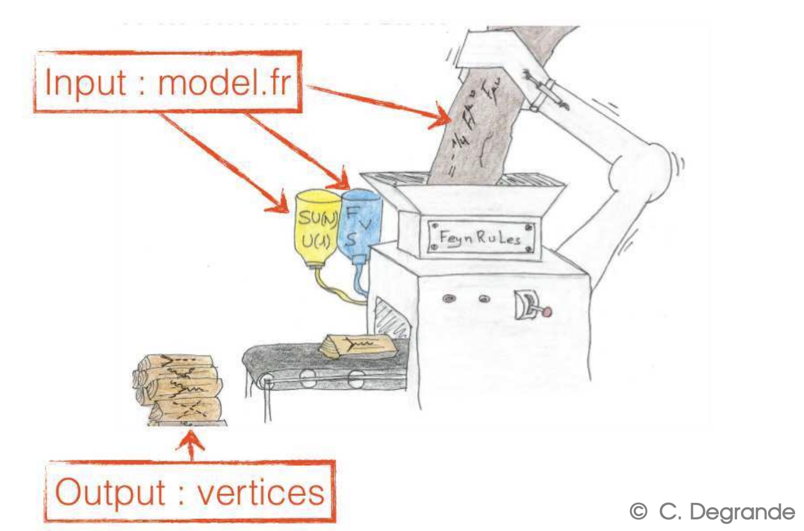

Useful Tip:
The Feynman rules can be stored in different types of files. However the most relevant type of output file is the Universal Feynman Output (UFO) given that its unified syntax works for most of the event generation softwares
In order to install FeynRules the user needs to have installed Mathematica in their machines, the installation of mathematica can be refered in the following link
In order to install the package of FeynRules download the package and untar it.
Download FeynRulesAfter you have alredy untar it, go to the feynrules-current folder and execute the FeynRulesPackage.m file in mathematica there should not be any error messages.
If there is any error messages refer to the Oficial Page
Load the package into a Mathematica session as the following code line
FeynRulesPath = SetDirectory[ {absolute_path} ]; << FeynRules`
{absolute_path} refers to the address of the package which is the location where the FeynRulesPackage.m is stored. This must be specified as an absolute path
If the program has been correctly installed the program must have initialized two kernels and run the line whitout errors
The loading procces should be done before we load any model and everytime that the notebook is restarted
FeynRules inteends to be an universal model generator. Most of the programs that creates simulations of procecess uses the feynman rules defined at each possible vertex, generating these rules is rather complicated. Nontheless, all of these rules can be derivated from the model Lagrangian. FeynRules takes advantage of this fact and derive the Feynman rules from a modelfile which defines a Lagrangian and some extra parameters to define unambiguously the desired model.

Along this Quick Review we will learn to implement a simple model into the FeynRules framework and then to export the Feynman Rules at each vertex to a generic file output
The Feynman rules can be stored in different types of files. However the most relevant type of output file is the Universal Feynman Output (UFO) given that its unified syntax works for most of the event generation softwares
This implementation is inspired on the FeynRules Manual, refer to it in order to have a deeping understanding of the construction of FeynRules
The model under consideration is a variant of the \(\phi^{4}\) theory. It displays all the most relevant features the user might encounter when implementing a new model. In particular, it shows how to:
the model consist of two complex scalar fields \(\phi_{i}(x), ~i=1,2 ~\) that interacts as the following lagrangian shows
\[ \mathcal{L}= \partial_{\mu}\phi_{i}^{\dagger}\partial^{\mu}\phi_{i}-\phi^{\dagger}_{i}\mathcal{M}_{ij}\phi_{j}+(\phi_{i}^{\dagger}\lambda_{ij}\phi_{j})^2\]please notice that every field is a doublet, such that \(\mathcal{M}_{ij}~\) and \(\lambda_{ij}~\) are real square matrices. We define the matrices such that they can be symmetric, in the following way
\[\mathcal{M}=\begin{bmatrix}m_1^2& \frac{m^{2}_{12}}{2}\\ \frac{m^{2}_{12}}{2} & m_2^2\end{bmatrix} ~~\lambda= \begin{bmatrix}\lambda_{11} & \lambda_{12}\\ \lambda_{12} & \lambda_{22}\end{bmatrix} \]As the matrix is not diagonal the fields \(\phi_{i}(x), ~i=1,2 ~\) are not eigenstates, then in order to have the measurable fields it's necessary to make an unitary transformation in order to find the representation of the lagrangian in the mass-eigenstates space
\[\phi_{i}=U_{ij}\Phi_{j}~~~ U^{T}\mathcal{M}U=\begin{bmatrix}M_1^2& 0\\ 0 & M_2^2\end{bmatrix} \]Given that we need to define the rotation matrix, one needs to compute the eigenvalues and eigenvectors of the representation, this can be computed by hand or with some software tools, note that as we are fiding mass-eigenstates then the couplings are going to be dependent of the mixing of the gauge states.
Then the mass eigen values are
\[M_{1,2}^2= \frac{1}{2}\left(m_1^2 + m_2^2 \pm \sqrt{(m_1^2-m_2^2)^2+m_{12}^{4}}\right)\]In order to obtain this eigenstates one need to parametrize the rotation matrix\(U~\) as
\[U=\begin{bmatrix}-sin\theta& cos\theta\\ cos\theta & sin\theta\end{bmatrix} \] where the sine of the angles reads as \[sin\theta=\frac{m_{12}^2}{\sqrt{m_{12}^4+\left(m_1^2-m_2^2+\sqrt{(m_1^2-m_2^2)^2+m_{12}^4}\right)}}\]Having alredy define the model one can define the model-file from the lagrangian in the eigen-mass space
This implementation is inspired on the FeynRules Manual, refer to it in order to have a deeping understanding of the construction of FeynRules
Feynrules needs a model-file(.fr) which describes the basic Interactions of the implemented lagrangian. Thus the Feynman rules can be computed from this model-file, FeynRules is not restricted to Standard Model(SM) interations, actually any QFT model can be implemented and tested in order to develop new physics. Feynrules computes Feynman rules at Leading Order(LO), in case that the user wants to implement calculations at Next to Leadin Order(NLO) level, one needs to include certain consideration to the model-file.
Along this section it will be explained step by step how to implement the full FirstModel.fr file. The first step is optional, in this part we summarize the model information for things like the author, institution and metadata necessary to recognize the work implemented by every author, it can be done as the following way:
>>>
M$ModelName = "First_Model";
M$Information = {
Authors -> "N.Vergara-Duran",
Institution -> "U.Andes",
Email -> "nf.vergara10@uniandes.edu.co",
Date -> "Feb, 11 2020",
References -> {"The Feynrules Manual"}
};
After it has been properly cited, then we can start with the model itself, in this section we must define the indices for our fields and matrices, here it's where it's satated the dimesonality of the parameters in the spinor space. We will chose that the indices for the lagrangian would be in a range 2 given that we are working with doublets for the field, and clearly the index must be of type scalar. Each index denotes an object of the form Index[name, i], and it can have different types as it's Lorentz, Spin or Weyl spinors. Moreover, the indices of type Lorentz, Spin, Spin1 and Spin2 are defined internally and do not need to be defined by the user. In addition, it is possible to specify how the different types of indices should be printed on the screen. This is done via the IndexStyle command
>>>
IndexRange[ Index[Scalar] ] = Range[2];
IndexStyle[ Scalar, i];
After defining all the types of indices, the fundamental part of the model is to define the parameters (coupling constants, mixing angles and matrices, masses, etc.). All of this parameters must be stated on the following brakets
>>>
M$Parameters = {};Each component of this list consists of an equality whose left-hand side is a label and the right-hand side is a list of Mathematica replacement rules, parameters can either be internal or external this would if either the parameter is indepent an it's given as an input or either the parameter is dependet(internal) of the independent parameters of the model.
>>>
lam == {
ParameterType -> External, ComplexParameter -> False,
Indices -> {Index[Scalar], Index[Scalar]},
Value -> {lam[1, 1] -> 0.9, lam[1, 2] -> 0.1, lam[2, 1] -> 0.1,
lam[2, 2] -> 0.9},
Description -> "Scalar quartic coupling matrix"},>>>
MM == {
ParameterType -> External,
ComplexParameter -> False,
Indices -> {Index[Scalar], Index[Scalar]},
Value -> {MM[1, 1] -> 100^2,
MM[1, 2] -> 10^2/2,
MM[2, 1] -> 10^2/2,
MM[2, 2] -> 200^2},
Description -> "Mass matrix"},After the model description is created and the Lagrangian constructed, it can be loaded into FeynRules and the Feynman rules will be obtained. The first thing that must be done when using FeynRules is to load the package into a Mathematica session as following
>>>
FeynRulesPath = SetDirectory[ ]; << FeynRules`
The model can be loaded using the command LoadModel, every file that's not in the curren directory, in order to load it must be specified the respective path of the file. Also the model must be loaded every time it's modified.
>>>
LoadModel[ < file.fr >, < file2.fr >, ... ]
After the model is loaded and the Lagrangian is defined, the Feynman rules can be extracted using the command FeynmanRules.
>>>
FeynmanRules[ Lscal ]There is also an enormous number of functions that can be used in order to analyze and confirm that the model was correted implemented in the file. All this commands can be viewed in the Defining the model section.